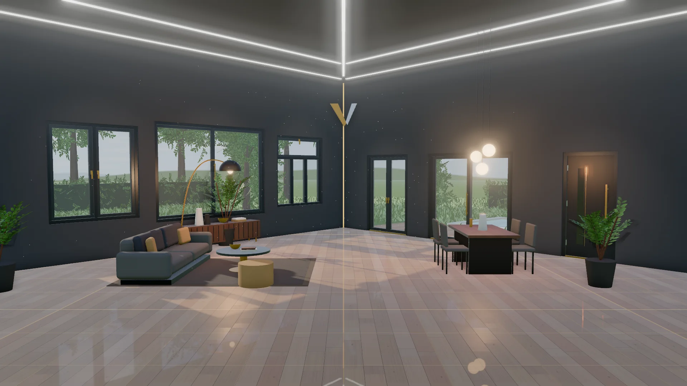
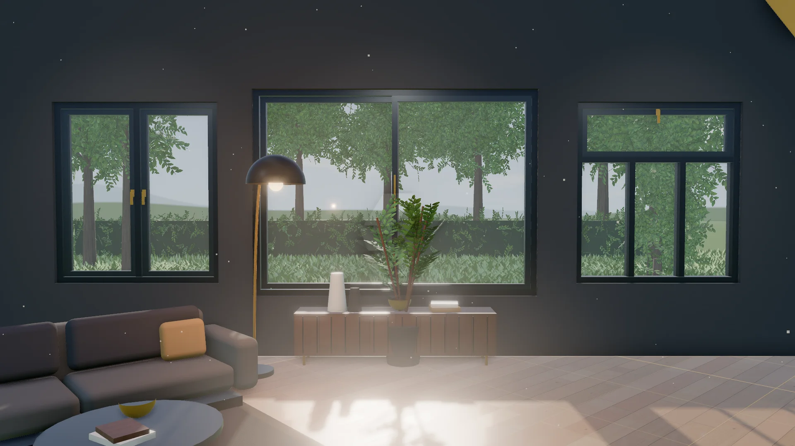
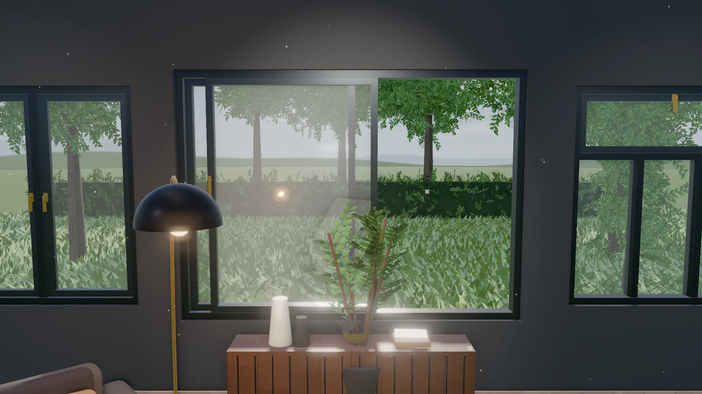

- Pagrindinis
- Montavimas
Montavimas
Langų ir durų montavimas žingsnis po žingsnio
Nuo matavimo iki sutvarkytos patalpos: štai ką darome kiekvieno montavimo metu, kad langai ir durys būtų sandarūs ir šilti.

Darbų eiga
Kaip montuojame
Apžiūra ir matavimai
Tiksliai išmatuojame angą ir aptariame sprendimą. Matavimas nemokamas.
Patalpos paruošimas
Uždengiame baldus ir grindis, apsaugome laiptinę.
Senų gaminių išmontavimas
Atsargiai išimame senus langus ar duris.
Angos paruošimas
Išvalome ir išlyginame angą bei slenkstį.
Pritaikymas
Patikriname matmenis prieš tvirtinant.
Lygiavimas
Išlyginame gulsčiuku ir pleištais.
Tvirtinimas
Pritvirtiname ankeriais ar varžtais prie sienos.
Sandarinimas ir šiltinimas
Užpildome tarpus montavimo putomis ir sandariname.
Apdaila
Sumontuojame apvadus, palanges ir furnitūrą.
Patikra ir perdavimas
Patikriname veikimą, spynas ir sandarumą, sutvarkome patalpą.
Gaminiai
Ką montuojame
-

Langai
Varstomi-verčiami, stumdomi ir langai su viršlangiu – PVC, aliuminio ar medienos profilio.
Apie langus → -

-

Senų keitimas ir nauji objektai
Keičiame senus langus bei duris ir montuojame naujuose objektuose: namuose, butuose ir komercinėse patalpose.
Gauti pasiūlymą →
DUK
Dažniausi klausimai
Ar matavimas mokamas?
Ne. Matavimas nemokamas, o preliminarų pasiūlymą atsiunčiame per 1 darbo dieną po užklausos.
Ką reikia paruošti prieš montavimą?
Užtenka atlaisvinti priėjimą prie langų ir durų. Baldus ir grindis uždengiame patys, o baigę sutvarkome patalpą.
Kaip gauti tikslesnį pasiūlymą?
Užklausoje pridėkite iki 5 esamų langų ar angų nuotraukų ir nurodykite apytikslius matmenis. Tikslius duomenis patikslins matavimas.
Kur dirbate?
Langus ir duris montuojame visoje Lietuvoje.